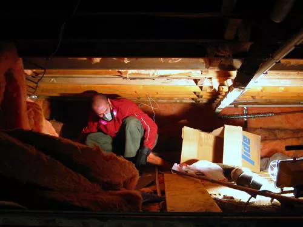

Isolamento

Verificar o isolamento da sua casa é uma das maneiras mais rápidas e econômicas de reduzir o desperdício de energia e aproveitar ao máximo seu dinheiro. Embora o isolamento possa ser feito a partir de uma variedade de materiais, ele geralmente vem em quatro tipos:
Rolos e mantas - Também conhecidos como "cobertores", são produtos flexíveis feitos de fibras minerais, como fibra de vidro e lã de rocha, disponíveis em larguras em conformidade com o espaçamento padrão de vigas de parede e vigas de sótão ou piso.
Isolamento de enchimento solto - Normalmente feito de fibra de vidro, lã de rocha ou celulose, esse tipo de isolamento é formado em fibras soltas ou pellets de fibras, que são sopradas em espaços onde é difícil instalar outros tipos de isolamento.
Isolamento rígido de espuma - Embora o isolamento de espuma tenda a ser mais caro que o isolamento de fibra, é muito eficaz em edifícios com limitações de espaço e onde são necessários valores R mais altos (o nível de resistência à transferência de calor).
Isolamento de espuma no local - Essa variedade de isolamento é soprada nas paredes e reduz o vazamento de ar ao redor das janelas e caixilhos das portas.